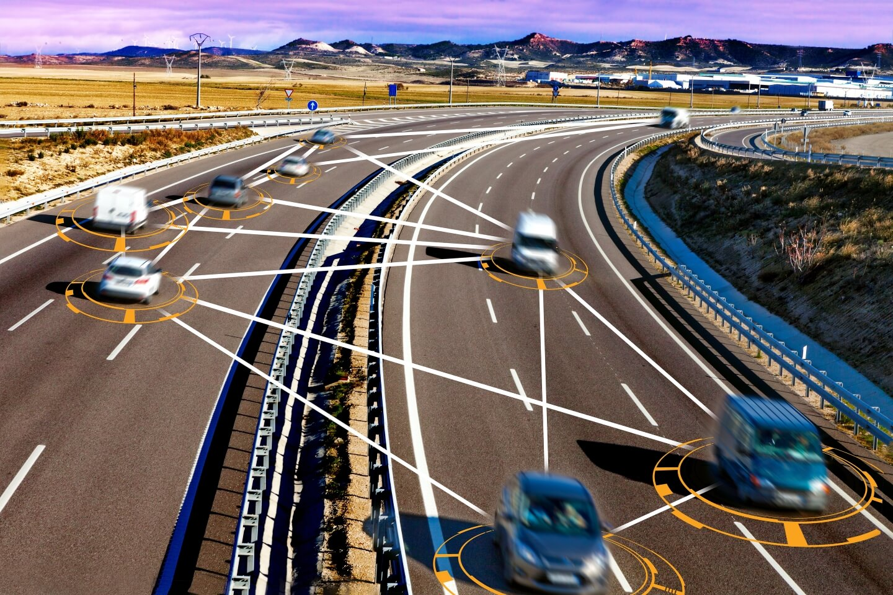
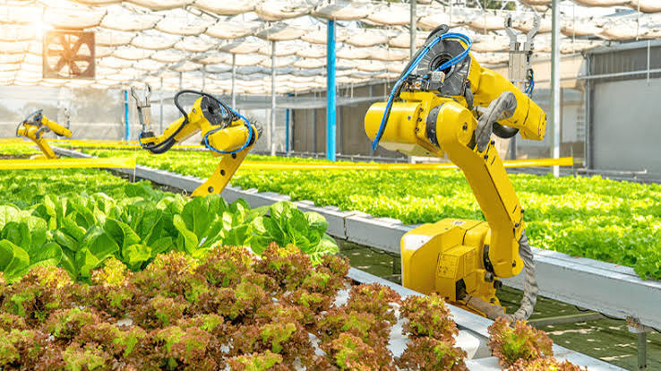
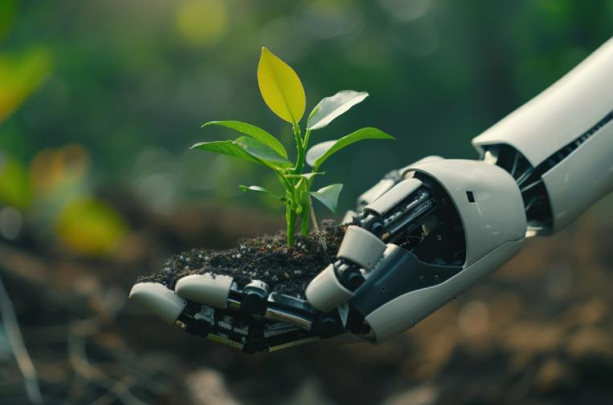
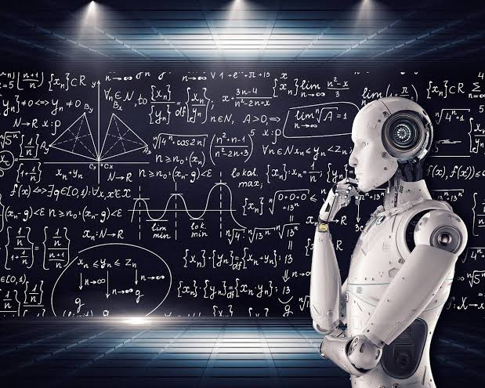

ÍNDICE
IA en la educación
La inteligencia artificial se utiliza en la educación para facilitar el aprendizaje de los estudiantes y ayudar a los profesores. Permite resolver dudas, explicar temas difíciles, traducir textos, corregir ejercicios y adaptar las actividades al nivel de cada alumno. También existen plataformas educativas que utilizan IA para ofrecer ejercicios personalizados.
IA en la medicina y la salud
La IA se aplica en el ámbito sanitario para ayudar a los médicos a detectar enfermedades, analizar radiografías y otras imágenes médicas, estudiar historiales clínicos y desarrollar nuevos medicamentos. También puede utilizarse para controlar la evolución de los pacientes. Sin embargo, las decisiones médicas deben estar supervisadas por profesionales sanitarios.
IA IA en la industria
En la industria, la inteligencia artificial permite automatizar procesos de fabricación y mejorar la productividad. Los robots inteligentes pueden realizar tareas repetitivas, clasificar productos y detectar defectos. Además, la IA ayuda a predecir cuándo una máquina puede averiarse, lo que permite reducir los costes y evitar interrupciones en la producción.
IA en el transporte
La inteligencia artificial se utiliza para mejorar la seguridad y la eficiencia del transporte. Permite calcular rutas más rápidas, predecir atascos, gestionar semáforos y optimizar el transporte público. También se emplea en el desarrollo de vehículos con funciones de conducción automatizada, que utilizan sensores y cámaras para detectar obstáculos y reconocer señales de tráfico.

IA en la vida cotidiana
La IA está presente en muchas actividades diarias. Se encuentra en los asistentes virtuales, los teléfonos móviles, los traductores automáticos y las plataformas de entretenimiento. Por ejemplo, las aplicaciones de música y vídeo recomiendan contenidos según los gustos de cada persona. También permite desbloquear teléfonos mediante reconocimiento facial y filtrar mensajes no deseados.
IA en el arte y la creación de contenidos
La inteligencia artificial permite crear imágenes, textos, música, vídeos y diseños a partir de instrucciones escritas. También ayuda a editar fotografías, mejorar grabaciones y desarrollar ideas creativas. Estas herramientas pueden ser útiles para artistas, diseñadores, escritores y creadores de contenido, aunque es importante respetar los derechos de autor y comprobar la originalidad de los materiales generados.
IA en la agricultura
En la agricultura, la inteligencia artificial ayuda a mejorar los cultivos y aprovechar mejor los recursos naturales. Mediante sensores, cámaras y drones, puede detectar plagas, identificar enfermedades en las plantas y controlar la humedad del suelo. También permite optimizar el riego y calcular cuándo es el mejor momento para recoger las cosechas, reduciendo el desperdicio de agua y otros recursos.

IA en la seguridad informática
La IA se utiliza para proteger ordenadores, teléfonos móviles y redes informáticas frente a posibles amenazas. Puede detectar actividades sospechosas, identificar correos electrónicos fraudulentos y reconocer patrones relacionados con los ciberataques. Además, ayuda a los bancos y otras empresas a detectar operaciones que podrían ser fraudulentas. No obstante, también puede ser utilizada por los delincuentes para crear estafas más sofisticadas.
IA en el comercio y la atención al cliente
Muchas empresas utilizan la inteligencia artificial para mejorar la atención al cliente y conocer las necesidades de los consumidores. Los chatbots pueden responder preguntas frecuentes durante todo el día, mientras que los sistemas de recomendación sugieren productos según los intereses de cada usuario. Asimismo, la IA ayuda a gestionar inventarios, analizar ventas y prever la demanda de determinados productos.
IA en el medioambiente
La inteligencia artificial contribuye a la protección del medioambiente mediante el análisis de datos sobre el clima, la contaminación y los ecosistemas. Puede ayudar a predecir fenómenos meteorológicos, detectar incendios forestales y vigilar la deforestación. También se utiliza para mejorar la eficiencia energética de edificios y fábricas, reducir el consumo de recursos y favorecer el desarrollo sostenible.

IA en la ciencia y la investigación
En la investigación científica, la IA permite analizar grandes cantidades de datos en menos tiempo y encontrar patrones difíciles de detectar para las personas. Se utiliza en campos como la astronomía, la biología, la química y la física. Además, ayuda a estudiar enfermedades, desarrollar nuevos materiales y acelerar experimentos, facilitando importantes avances científicos y tecnológicos.
